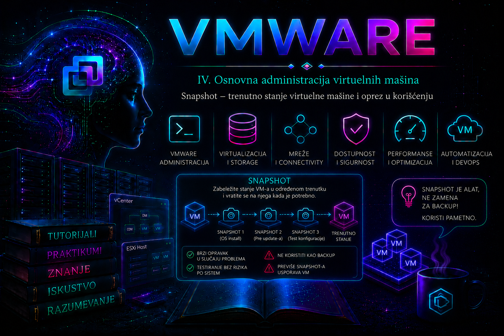

VMware

Snapshot je jedna od najkorisnijih, ali i najčešće pogrešno shvaćenih funkcija VMware vSphere platforme. On čuva tačku u vremenu iz koje administrator može brzo da vrati stanje virtuelne mašine ako kontrolisana promena, kao što su instalacija zakrpe, nadogradnja aplikacije ili izmena konfiguracije, ne uspe. Snapshot zato pripada upravljanju promenama i kratkotrajnom rollback-u; nije rezervna kopija, arhiva niti zamena za application-aware zaštitu podataka.
Ova lekcija se nadovezuje na power operacije iz lekcije 16. Pre snapshot-a administrator mora da zna da li VM može ostati uključena, da li aplikacija zahteva quiescing ili potpuno gašenje i kakve posledice može imati povratak njenog diska i memorije u ranije stanje. Znanje iz ove lekcije biće važno i za kasnije teme o VMDK lancima, datastore kapacitetu, backup-u, performansama i sistematičnom troubleshootingu.
Šta snapshot jeste, a šta nije?
Snapshot čuva stanje i podatke VM-a u određenom trenutku. Kada se napravi prvi snapshot, postojeći virtuelni disk postaje roditelj, a novi upisi odlaze u child, odnosno delta disk. Aktivno stanje VM-a zato se ne nalazi u jednom fajlu, već se rekonstruiše prateći lanac od aktivnog delta diska do njegovih roditelja. Snapshot ne kopira samostalno ceo VM na nezavisnu lokaciju i bez osnovnog diska nije dovoljan za oporavak.
| Mehanizam | Primarna svrha | Zavisnost od izvornog VM-a | Tipična retencija | Primer |
|---|---|---|---|---|
| Snapshot | Kratkotrajni rollback kontrolisane promene | Potpuna: oslanja se na bazni disk i ceo lanac | Minuti ili sati; prema Broadcom smernici ne duže od 72 sata | Povratak posle neuspešne zakrpe |
| Backup | Zaštita i oporavak podataka prema RPO/RTO ciljevima | Logički i fizički odvojen skup za oporavak | Dani, meseci ili godine prema politici | Oporavak posle gubitka datastore-a |
| Clone | Nova, odvojena VM za test, migraciju ili standardizaciju | Full clone je nezavisan; linked clone zavisi od roditelja | Prema životnom ciklusu nove VM | Testna kopija servera |
| Replikacija | DR kopija na drugom mestu i orkestrirani oporavak | Zavisi od proizvoda, politike i recovery plana | Kontinuirano ili u intervalima | Oporavak workload-a na DR lokaciji |
Ako datastore, bazni VMDK ili potreban član lanca postane nedostupan, snapshot na istom storage-u ne rešava incident. Jednako važno, vraćanje snapshot-a vraća ceo obuhvaćeni disk na starije stanje i ne daje granularni restore pojedinačne baze, tabele ili datoteke. Za baze podataka koriste se nativni alati proizvođača baze ili sertifikovano application-aware backup rešenje, uz zasebno testiran restore.
Šta se čuva i koji fajlovi učestvuju?
- Stanje virtuelnih diskova: descriptor i delta/child diskovi čuvaju blokovske promene posle tačke snapshot-a. Na VMFS6 snapshot diskovi koriste SEsparse format; naziv fajla nije pouzdan pokazatelj redosleda grana.
- Snapshot metapodaci:
.vmsdopisuje inventar i odnose u snapshot stablu koje prikazuje Snapshot Manager. - Stanje i konfiguracija:
.vmsnčuva snapshot state; kod memory snapshot-a uključuje i aktivno izvršno stanje, dok se za memoriju mogu pojaviti i veliki prateći fajlovi približni veličini dodeljenog RAM-a. - Power state i uređaji: snapshot beleži stanje VM-a i relevantnih virtuelnih uređaja, ali diskovi u režimu Independent nisu obuhvaćeni standardnim snapshot lancem.
Pre snapshot-a:
VM → app.vmdk (descriptor) → app-flat.vmdk (podaci)
Posle prvog snapshot-a:
VM → app-000001.vmdk → app.vmdk → app-flat.vmdk
Posle drugog snapshot-a:
VM → app-000002.vmdk → app-000001.vmdk → app.vmdk → app-flat.vmdk
Aktivni descriptor u .vmx konfiguraciji pokazuje disk koji VM trenutno koristi. Administrator ne sme ručno brisati -00000X.vmdk, -delta.vmdk, -sesparse.vmdk, .vmsd ili .vmsn samo zato što izgledaju stari ili se ne vide u Snapshot Manager-u. Skriven ili neusaglašen lanac prvo se dokazuje konfiguracijom, descriptor odnosima, lock-ovima i zvaničnim postupkom konsolidacije.
Memory, crash-consistent i quiesced snapshot
| Opcija | Stanje pri povratku | Prednost | Ograničenje i rizik |
|---|---|---|---|
| Snapshot virtual machine's memory | VM se vraća u uključeno izvršno stanje, sa sadržajem RAM-a i otvorenim sesijama | Najverniji kratkotrajni povratak laboratorijskog ili pažljivo procenjenog workload-a | Duže kreiranje, dodatni prostor i VM stun; stari mrežni i aplikacioni kontekst može biti nebezbedan |
| Bez memorije i bez quiescing-a | Po povratku VM je ugašena; disk je tipično crash-consistent | Brže i sa manjim storage troškom | Gost se oporavlja kao posle neočekivanog prekida napajanja; transakcije u memoriji nisu garantovane |
| Quiesce guest file system | Po povratku VM je ugašena, a on-disk stanje je prethodno umireno preko VMware Tools-a | Flush keša i konzistentniji filesystem | Nije automatski garant puna aplikaciona ili transakciona konzistentnost; može propasti pod visokim I/O opterećenjem |
| Snapshot ugašene VM | Čisto, ugašeno stanje gosta | Najjednostavnija konzistentna tačka za aplikaciju koja je pravilno zaustavljena | Zahteva prekid usluge |
Memory i quiesce opcije su međusobno isključive u aktuelnom vSphere Client-u. Quiescing zahteva uključenu VM, instaliran i funkcionalan VMware Tools i podržan gostujući sistem. Na Windows-u mogu biti uključeni VSS writer-i i VMware Snapshot Provider; uspešna vSphere task poruka ipak nije dovoljan dokaz da je svaka poslovna aplikacija transakciono konzistentna. Za Oracle, SQL Server, Active Directory i slične sisteme mora se poštovati dokumentacija proizvođača aplikacije, podržana metoda zaustavljanja/backup-a i plan oporavka.
Administratorska odluka: kada snapshot ima smisla?
Dobar scenario ima jasno definisanu promenu, vlasnika, rok brisanja i kriterijum odluke: ili se promena potvrđuje pa se snapshot briše, ili se rollback izvršava u dogovorenom prozoru. Primeri su OS patch, promena konfiguracionog fajla, kratko testiranje automatizacije i laboratorijska vežba. Snapshot ne treba praviti „za svaki slučaj” bez plana, niti ga zadržavati nakon što je validacija završena.
- Za produkcioni VM proceni write rate, slobodan prostor na svakom relevantnom datastore-u, dodeljeni RAM ako se čuva memorija i očekivano trajanje promene.
- Proveri da nema tekućeg backup-a, Storage vMotion-a, kloniranja, druge snapshot operacije ili zaključanog diska.
- Za višeslojnu aplikaciju odredi application-consistent recovery redosled; nezavisni snapshot-i nekoliko VM-ova nisu automatski konzistentna zajednička tačka.
- Dokumentuj change/incident ID, vlasnika, tačan razlog, vreme kreiranja i najkasnije vreme uklanjanja.
- Za bazu podataka snapshot koristi samo ako je to kratkotrajno, podržano i usklađeno sa DBA procedurom; ne kao database backup.
Broadcom podržava najviše 32 snapshot-a u jednom lancu, ali zbog performansi preporučuje samo dva do tri. I ta preporuka je tehnički maksimum za razuman rad, a ne cilj. Produkciona politika je obično stroža: jedan kratkotrajan snapshot po promeni, automatski alarm za starost i uklanjanje odmah po validaciji. Zvanična smernica je da jedan snapshot ne ostaje duže od 72 sata; write-intensive baze treba meriti minutima ili satima, ne danima.
Kapacitet, performanse, dostupnost i bezbednost
Delta disk raste sa promenjenim blokovima i može dostići približno provisioned veličinu svog virtuelnog diska uz overhead. Više diskova, više snapshot tačaka i memory state dodatno povećavaju zahtev. Kod thin baznog diska i konsolidacija može povećati njegovu fizičku zauzetost do provisioned granice. Zbog toga procena „trenutna veličina snapshot-a plus nekoliko gigabajta” nije dovoljna: mora obuhvatiti očekivane nove upise tokom promene i tokom merge-a, rast baznog thin diska, druge VM-ove na datastore-u i operativnu rezervu.
Dug lanac povećava broj slojeva iz kojih se blokovi pronalaze i može pogoršati latenciju. Efekat zavisi od storage tehnologije: klasični VMFS/NFS delta lanci nisu isto što i nativni snapshot mehanizmi na vVol, NFS sa VAAI ili određenim vSAN arhitekturama. Ipak, nijedna optimizacija ne menja osnovnu politiku kratke retencije. Kreiranje, brisanje i konsolidacija mogu izazvati kratke VM stun periode; rizik raste sa velikim snapshot-ima, intenzivnim upisima, sporim ili zagušenim storage-om i lošim lancem.
Snapshot s memorijom može sadržati poverljive podatke koji su bili u RAM-u: tokene, ključeve, sesije ili delove poslovnih podataka. Pristup datastore-u, VM fajlovima i privilegijama Virtual machine > Snapshot management zato mora slediti princip najmanjih privilegija, a događaji kreiranja, povratka i brisanja moraju ostati u audit tragu. Snapshot takođe nije bezbedan način za „zamrzavanje dokaza” ako incident-response procedura zahteva forenzičku nepromenljivost.
Kreiranje snapshot-a u vSphere Client-u
VM → Actions → Snapshots → Take Snapshot- Na karticama Summary, Tasks i Events proveri health, upozorenja, postojeće snapshot-e i aktivne zadatke.
- Proveri slobodan kapacitet i performanse svih datastore-ova na kojima su VM Home i virtuelni diskovi.
- Unesi jednoznačan naziv, na primer
CHG-4821_pre_os_patch_expires_2026-07-22T18-00Z, i opis sa vlasnikom, razlogom i rokom. - Izaberi ili memory ili quiesce samo ako je to opravdano prethodnom procenom. Za ugašenu VM obe opcije su nepotrebne.
- Pokreni operaciju i sačekaj da task završi; ne tretiraj pojavljivanje stavke u Snapshot Manager-u kao jedinu validaciju.
- Potvrdi novo stanje u Snapshot Manager-u, task rezultat, event i datastore metrike. Kod aplikacione konzistentnosti proveri i gostujuće logove/VSS writer-e ili nativni status aplikacije.
Nazivi poput Before Update brzo postaju neupotrebljivi jer ne sadrže vlasnika, predmet promene ni rok. Smislen opis je operativna kontrola, ne ukras. Administrator koji preuzima smenu mora iz njega razumeti zašto snapshot postoji i ko odlučuje o njegovom uklanjanju.
Snapshot Manager: Go To, Delete, Delete All i Consolidate
| Operacija | Šta radi | Šta ne radi | Glavni rizik |
|---|---|---|---|
| Go To / Revert | Vraća VM na izabranu tačku; trenutno stanje posle te tačke više nije aktivno | Ne predstavlja granularni restore i ne čuva automatski sadašnje stanje | Gubitak svih kasnijih promena i nekonzistentnost sa spoljnim sistemima |
| Delete | Uklanja izabranu tačku i commit-uje njene promene u roditeljski disk, uz očuvanje aktuelnog stanja VM-a | Ne vraća VM na starije stanje i ne „briše izmene” iz aktivnog sistema | I/O opterećenje, trajanje, stun i nedostatak prostora |
| Delete All | Commit-uje ceo vidljivi lanac prema baznim diskovima i uklanja snapshot tačke | Ne rešava nužno svaki orphaned/locked fajl | Veliki merge, rast thin baze i dugo trajanje |
| Consolidate | Usklađuje redundantne delta fajlove kada lanac na datastore-u nije u skladu sa Snapshot Manager-om | Nije rutinska zamena za Delete i ne znači rollback | Lock, prostor, backup proxy ili oštećen lanac |
Pre Go To/Revert operacije precizno utvrdi koji podaci nastali posle snapshot-a nestaju, kako će se uskladiti DNS, baze, direktorijum, redovi poruka i drugi sistemi i da li je potrebno prvo napraviti zaštitnu kopiju aktuelnog stanja. Povratak memory snapshot-a vraća i stare mrežne sesije i vreme izvršavanja, što udaljeni sistemi ne moraju prihvatiti. U produkciji Go To zahteva odobren change ili incident postupak i verifikovan application recovery plan.
Delete ne briše aktuelne poslovne podatke: on uklanja snapshot tačku tako što spaja blokovske promene. Ne prekidaj operaciju samo zato što GUI dugo prikazuje 99%. Na vSphere 8.x/Broadcom preporuka je da se tekući delete/consolidate ne otkazuje zbog rizika od korupcije. ESX 9 uvodi izveštavanje o progresu i proceni završetka, kontrolisano otkazivanje i nastavak određene offline konsolidacije, ali to je verzijski uslovljena mogućnost, a ne dozvola da se operacija prekida bez procene.
VCF PowerCLI: inventar, kreiranje, povratak i uklanjanje
Sledeće komande izvršavaju se u PowerShell-u sa instaliranim aktuelnim VCF PowerCLI modulima. Nalog mora imati samo potrebne vCenter privilegije. Get-* komande su read-only; New-Snapshot, Set-VM -Snapshot i Remove-Snapshot menjaju stanje.
Connect-VIServer -Server 'vcsa.lab.local'
$vm = Get-VM -Name 'Ubuntu-Server'
$snapshots = Get-Snapshot -VM $vm |
Sort-Object Created
$snapshots |
Select-Object VM, Name, Created, SizeGB, Description |
Format-Table -AutoSize
Prvo proveri da Get-VM vraća tačno jedan objekat i pregledaj postojeći lanac. Kreiranje bez memory state-a i uz quiescing prikladno je samo ako VMware Tools i gost podržavaju postupak:
$snapshot = New-Snapshot `
-VM $vm `
-Name 'CHG-4821_pre_patch' `
-Description 'Owner: NOC; expires: 2026-07-22T18:00Z' `
-Memory:$false `
-Quiesce:$true
$snapshot | Select-Object VM, Name, Created, SizeGB
Ako quiescing nije podržan ili nije potreban, nemoj mehanički zadržati -Quiesce:$true; primeni unapred odobrenu konzistentnost. Za memory snapshot koristi -Memory:$true i nemoj istovremeno zahtevati quiescing.
$target = Get-Snapshot -VM $vm -Name 'CHG-4821_pre_patch'
# STATE-CHANGING: vraća VM na starije stanje.
Set-VM -VM $vm -Snapshot $target -Confirm:$true
Interaktivna potvrda je namerno ostavljena. -Confirm:$false koristi se tek u kontrolisanoj automatizaciji sa pre-check-ovima, jednoznačnim objektom, change odobrenjem i logovanjem. Uklanjanje jedne potvrđene tačke:
$target = Get-Snapshot -VM $vm -Name 'CHG-4821_pre_patch'
# STATE-CHANGING: commit delta podataka i uklanjanje snapshot tačke.
$task = Remove-Snapshot -Snapshot $target -RunAsync -Confirm:$true
$task | Wait-Task
Get-Snapshot -VM $vmZa inventar starih snapshot-a može se koristiti read-only izveštaj; prag je interna kontrola, ne dokaz da je svaki mlađi snapshot bezbedan:
$cutoff = (Get-Date).AddHours(-24)
Get-VM | Get-Snapshot |
Where-Object Created -lt $cutoff |
Select-Object VM, Name, Created, SizeGB, Description |
Sort-Object CreatedESXi Shell i vim-cmd: dijagnostika sa oprezom
ESXi Shell/SSH nije primarni svakodnevni interfejs ako vCenter radi. Privremeno ga omogući samo prema bezbednosnoj politici, prijavi se administrativnim nalogom i po završetku ga isključi. Sledeće komande za listanje i pregled su read-only:
vim-cmd vmsvc/getallvms
vim-cmd vmsvc/snapshot.get 12
Za dokaz koji descriptor VM trenutno koristi pronađi .vmx putanju iz prethodnog izlaza i pregledaj VMDK reference. Navodnici su važni ako putanja sadrži razmake:
grep -i 'fileName.*vmdk' '/vmfs/volumes/datastore01/Ubuntu-Server/Ubuntu-Server.vmx'scsi0:0.fileName = "Ubuntu-Server-000001.vmdk"Sledeća komanda menja stanje i uklanja sve snapshot-e za dati VMID. Pokreni je samo kada je identitet VM-a dvostruko potvrđen, nema backup posla, prostor i storage health su provereni i postoji odobren prozor. Ne pokušavaj da je prekineš na vSphere 8.x samo zato što dugo traje.
vim-cmd vmsvc/snapshot.removeall 12
Komanda vim-cmd vmsvc/snapshot.revert ima verzijski osetljivu sintaksu i nosi visok rizik gubitka podataka; za planirani povratak prednost imaju Snapshot Manager ili objektno jednoznačan PowerCLI postupak. Ručno editovanje descriptor-a, brisanje delta fajlova i kloniranje lancem pomoću vmkfstools nisu početni koraci: izvode se tek prema odgovarajućem Broadcom KB postupku, nakon zaštite podataka i po potrebi uz podršku proizvođača.
Monitoring, događaji i logovi
| Izvor dokaza | Šta proveravamo | Tumačenje |
|---|---|---|
| vSphere Client: Recent Tasks i Events | Početak, završetak, korisnik, greška, konkurentni zadaci | Osnovna vremenska linija; korelisati sa promenom i backup sistemom |
| VM Summary / Alarms | Virtual machine disks consolidation is needed, datastore usage, VM health | Upozorenje zahteva dokaz lanca i uzroka, ne nasumično brisanje fajlova |
/var/log/hostd.log na ESXi hostu | VM task, snapshot create/remove, lock i konfiguracione greške | Korelacija po vremenu, VMID-u, nazivu i task-u |
/var/log/vmkernel.log | Storage I/O, APD/PDL, lock i uređajski problemi | Pokazuje infrastrukturni uzrok, ne samo snapshot simptom |
vmware.log u VM direktorijumu | VMX proces, disk chain, stun i snapshot poruke | Koristan za konkretan VM i tačno vreme događaja |
| Datastore performance | Latency, IOPS, throughput, queue i slobodan prostor | Pokazuje da li merge napreduje i kakav je uticaj na susedne VM-ove |
| Guest/application logovi | VSS, filesystem, database recovery i servisni health | Jedini pouzdan dokaz funkcionalnog oporavka aplikacije |
grep -Ei 'snapshot|consolidat|lock|stun' /var/log/hostd.log | tail -n 200
grep -Ei 'APD|PDL|I/O|lock' /var/log/vmkernel.log | tail -n 200Ove komande samo čitaju lokalne logove, ali mogu vratiti mnogo podataka. Ograniči analizu na vreme incidenta i koreliši časovnike između vCenter-a, hosta, backup sistema i gosta. Nemoj zaključiti da je operacija zaglavljena samo zato što procenat dugo miruje: na vSphere 8.x GUI progres može biti neprecizan. Dokaz napretka su aktivan task, storage I/O i promene vremenskih oznaka relevantnih fajlova; u ESX 9 koristi se i nova procena progresa kada je dostupna.
Troubleshooting: „Virtual machine disks consolidation is needed”
Simptom: Snapshot Manager može biti prazan, ali Summary prikazuje upozorenje da je potrebna konsolidacija. Posledica: VM možda i dalje radi iz delta diska, prostor se ne oslobađa, backup može nastaviti da ostavlja nove delta fajlove, a buduće operacije mogu propasti. Neposredni uzrok: brisanje snapshot-a nije dovršilo commit ili je ostao rezidualni lanac. Osnovni uzrok često je nedostatak prostora, storage problem, file lock koji drži backup proxy ili prekinut/loše očišćen VADP posao.
- Zaustavi eskalaciju: ne kreiraj nove rutinske snapshot-e i ne briši fajlove; proveri da li teče backup ili druga storage operacija.
- Odredi obim: da li je pogođen jedan VM, više VM-ova na datastore-u ili ceo storage; proveri alarme, slobodan prostor i latenciju.
- Prikupi dokaze: Tasks/Events, Snapshot Manager,
Get-Snapshot,vim-cmd vmsvc/snapshot.get, aktivni VMDK iz.vmx,hostd.log,vmkernel.logi backup job istoriju. - Postavi hipotezu: razdvoji nevidljiv snapshot inventory, nedostatak prostora, zaključan disk, storage grešku i aktivnu konsolidaciju.
- Bezbedna korekcija: kada nema aktivnog backup-a/lock-a i kapacitet je dovoljan, pokreni Snapshots → Consolidate. Broadcom u određenim slučajevima neusaglašenog inventara propisuje kreiranje novog non-memory snapshot-a, zatim Delete All i Consolidate; to radi samo prema KB postupku i nakon procene prostora.
- Ako postoji backup proxy lock: potvrdi vlasnika lock-a i u koordinaciji sa backup timom odspoji hot-added disk sa proxy VM-a. Izaberi uklanjanje uređaja, nikada Delete files from datastore. Ne radi to dok backup traje.
- Eskalacija: ako konsolidacija ponovo propadne, lanac je nejasan ili prostor nije bezbedno obezbediti, zaustavi pokušaje i uključi storage/backup tim i Broadcom Support. Offline retry, clone VM-a ili
vmkfstools -isu kontrolisane recovery opcije, ne prvi potez. - Validacija: task je uspešan, upozorenje nestaje,
.vmxviše ne pokazuje aktivni-00000X.vmdk, nema očekivanih delta fajlova u aktivnom lancu, aplikacija radi, backup ponovo prolazi i datastore ima bezbednu rezervu.
Troubleshooting grane za tipične kvarove
| Simptom | Najverovatniji uzroci | Bezbedna prva akcija | Trajna mera |
|---|---|---|---|
| Snapshot creation failed | Nedostatak prostora, Independent disk, Tools/quiesce greška, konkurentan task | Proveri task/event, prostor, disk mode, Tools i guest log; ne ponavljaj naslepo | Ispravi kapacitet ili application-consistency proceduru |
| Quiesced snapshot ne uspeva | Visok I/O, nema slobodnog prostora u gostu, VSS/Tools servis ili writer nije zdrav | Proveri Tools, VSS writers, guest disk prostor i aplikaciju | Planiraj niže opterećenje ili podržani application-aware backup |
| Datastore se brzo puni | Visok write rate, stari/višestruki snapshot-i, veliki memory fajlovi | Zaustavi nepotrebne promene, proceni headroom i bezbedan merge prozor | Alarmi starosti/kapaciteta, vlasništvo i automatski izveštaj |
| Delete stoji na 99% | GUI ne prikazuje precizno progres; VM nastavlja upise; spor storage | Ne prekidaj; proveri task, I/O, timestamp i logove | Merge u periodu niskog I/O; na ESX 9 koristi procenu progresa |
| Unable to access file / locked | Backup proxy HotAdd, drugi host/proces ili stale lock | Identifikuj vlasnika lock-a i proveri backup posao | Ispravi backup cleanup/workflow i ažuriraj backup proizvod |
| VM spora dok snapshot postoji | Dug lanac, storage latencija, visok write rate | Izmeri latency/IOPS i starost/veličinu lanca | Skraćena retencija, manje tačaka i kapacitet/performance politika |
Praktikum: kontrolisani životni ciklus snapshot-a
Cilj i kontekst: u laboratoriji napraviti kratkotrajnu tačku povratka pre izmene konfiguracije, dokazati razliku između trenutnog i starog stanja, zatim izabrati rollback ili commit i završiti bez preostalog snapshot-a. Vežba se ne izvodi na produkcionoj bazi, Domain Controller-u, vCenter Server Appliance-u ili drugom infrastrukturno kritičnom sistemu.
Topologija i preduslovi: jedan vCenter/ESXi, testna VM Ubuntu-Server sa VMware Tools/open-vm-tools u stanju Running, jedan dependent virtuelni disk, dovoljno slobodnog datastore prostora i nalog sa privilegijama za pregled, kreiranje, povratak i uklanjanje snapshot-a. Obezbedi konzolni pristup i zabeleži početno stanje. Rizik je srednji jer Go To briše kasnije stanje; poslovni podaci se ne koriste.
Vežba 1 – Pre-check i bazna linija
- U vSphere Client-u proveri da nema snapshot-a, alarma ni aktivnih taskova i zabeleži datastore free space.
- Proveri da su Tools Running i da disk nije Independent.
- U gostu napravi bezazlenu kontrolnu datoteku i zabeleži vreme:
date -Is | sudo tee /var/tmp/snapshot-lab-state.txt
cat /var/tmp/snapshot-lab-state.txtOčekivani rezultat: postoji jedna datoteka sa vremenom T0, VM je zdrava i nema snapshot-a. Kriterijum završetka: snimljeni su VM naziv/MoRef ili VMID, datastore slobodan prostor, Tools status i T0 sadržaj.
Vežba 2 – Kreiranje i validacija quiesced snapshot-a
- Izaberi Take Snapshot, naziv
LAB17_T0_quiesced, isključi memory i uključi quiesce. - Sačekaj uspešan task i proveri Events. Ako operacija propadne, prvo proveri Tools, guest prostor i logove; ne prelazi na crash-consistent snapshot bez zapisane odluke.
- Potvrdi snapshot u Snapshot Manager-u ili PowerCLI-jem.
- U gostu promeni datoteku i dodaj novu:
printf '%s\n' 'STATE=T1_AFTER_SNAPSHOT' | sudo tee /var/tmp/snapshot-lab-state.txt
date -Is | sudo tee /var/tmp/created-after-snapshot.txt
cat /var/tmp/snapshot-lab-state.txt /var/tmp/created-after-snapshot.txtOčekivani rezultat: VM radi iz child diska, a obe izmene posle T0 su vidljive. Validacija: snapshot ima ispravan naziv/vreme, task je Success, datastore nije pod pritiskom i aplikaciona/probna datoteka pokazuje T1.
Vežba 3 – Kontrolisani rollback
Pre rollback-a naglas identifikuj podatke koji će nestati: T1 sadržaj i nova datoteka. Zatim iz Snapshot Manager-a izaberi LAB17_T0_quiesced i Go To. Potvrdi upozorenje. Pošto snapshot nema memory state, očekuj ugašenu VM; uključi je kroz postupak iz lekcije 16.
cat /var/tmp/snapshot-lab-state.txt
test ! -e /var/tmp/created-after-snapshot.txt
printf 'exit=%s\n' "$?"
Očekivani rezultat: prva datoteka ponovo sadrži T0, druga ne postoji, a test vraća exit=0. Proveri guest boot log, mrežu, Tools i servisni health; sama mogućnost prijave nije potpuna validacija. Ako se stanje ne poklapa, zaustavi vežbu, proveri izabranu granu i Events i ne izvršavaj dodatni revert.
Vežba 4 – Commit, praćenje i čišćenje
- Kada je vraćeno stanje potvrđeno, izaberi preostali snapshot i Delete. Ovim se ne vraća stanje, već uklanja tačka uz očuvanje aktuelnog sadržaja.
- Prati Recent Tasks i datastore latency/space. Ne prekidaj task na vSphere 8.x.
- Potvrdi da Snapshot Manager više nema snapshot, da nema Needs Consolidation upozorenja i da T0 datoteka i dalje postoji.
- PowerCLI-jem potvrdi da
Get-Snapshot -VM $vmne vraća objekte.
Rollback laboratorije: ukloni samo dve probne datoteke iz gosta. Ako se pojavi consolidation warning, ne briši ručno datastore fajlove; pređi na narednu vežbu. Kriterijum završetka: nema aktivnog snapshot lanca, VM i servis su zdravi, datastore ima očekivan prostor, a task/event trag je dokumentovan.
sudo rm -f /var/tmp/snapshot-lab-state.txt /var/tmp/created-after-snapshot.txtVežba 5 – Incident response simulacija: neuspešna konsolidacija
Ne izazivaj kvar brisanjem fajlova, punjenjem datastore-a ili prekidanjem merge-a. Bezbedna simulacija koristi unapred pripremljenu karticu incidenta: „Snapshot Manager je prazan; Summary prikazuje Virtual machine disks consolidation is needed; poslednji backup je Failed; datastore ima 22% slobodnog prostora.” Cilj je napraviti dokazni i korektivni tok, a ne stvarno oštetiti VM.
- Klasifikuj simptom, obim i moguću posledicu.
- Napiši redosled read-only provera: Tasks/Events, backup status, prostor/latencija,
Get-Snapshot,snapshot.get,.vmxreferenca i logovi. - Formuliši najmanje tri hipoteze: orphaned delta posle backup-a, proxy lock i storage/space problem.
- Za svaku hipotezu navedi dokaz koji je potvrđuje ili odbacuje.
- Predloži najmanje invazivnu korekciju: obustava novog backup-a, uklanjanje potvrđenog proxy lock-a u koordinaciji, zatim GUI Consolidate.
- Definiši stop-uslov: nejasan lanac, nedovoljno prostora, aktivan lock nepoznatog vlasnika, rastuća latencija ili ponovljen failure zahteva eskalaciju.
- Napiši post-check: upozorenje uklonjeno, bazni/aktivni disk potvrđen, aplikacija zdrava, prostor stabilan, sledeći backup uspešan i RCA evidentiran.
Kriterijum završetka: polaznik ume da odvoji privremeno zaobilazno rešenje od trajne mere. Privremena mera može biti zaustavljanje novih backup poslova i planiranje low-I/O prozora; trajna mera je ispravka backup cleanup-a, monitoring starosti snapshot-a i kapaciteta, vlasništvo i testiran operativni runbook.
Administratorske prakse
- Snapshot uvek veži za change/incident, vlasnika, razlog i rok; ukloni ga odmah nakon odluke o prihvatanju ili rollback-u.
- Ne koristi snapshot kao backup, arhivu ili zamenu za nativni database recovery.
- Pre kreiranja i brisanja proveri storage kapacitet, latenciju, write rate, postojeći lanac, backup i konkurentne zadatke.
- Preferiraj najmanji broj tačaka; podržani maksimum od 32 nije operativna preporuka. Broadcom preporučuje dva do tri, a produkciona politika treba da bude stroža.
- Ne zadržavaj snapshot duže od 72 sata; za intenzivne baze planiraj minute ili sate i vendor-podržan oporavak.
- Ne proširuj VMDK dok postoji snapshot. Broadcom izričito upozorava da pokušaj može dovesti do korupcije i gubitka podataka.
- Ne prekidaj delete/consolidate na vSphere 8.x i ne primenjuj ESX 9 mogućnosti otkazivanja na starije hostove.
- Nikada ručno ne briši snapshot/delta fajlove bez dokazanog aktivnog lanca, backup-a i odgovarajućeg KB/support postupka.
- Uvedi alarm i periodični PowerCLI izveštaj za starost, broj i veličinu snapshot-a, uz praćenje neuspelih backup snapshot-a.
- Posle svake operacije validiraj i infrastrukturno i aplikaciono stanje; „task completed” nije isto što i uspešan poslovni servis.
Završna kontrolna tačka
Lekcija je savladana kada administrator može da objasni parent/child VMDK lanac i ulogu .vmsd/.vmsn fajlova; razlikuje memory, crash-consistent, quiesced i offline stanje; opravda izbor snapshot-a u odnosu na backup, clone i replikaciju; proceni prostor i performansni rizik; bezbedno izvede i validira Take, Go To, Delete i Delete All; razlikuje Delete od Consolidate; pomoću vSphere Client-a, VCF PowerCLI-ja, vim-cmd, konfiguracije i logova prikupi dokaze; i za upozorenje Needs Consolidation sprovede dijagnostiku od najmanje invazivne provere do kontrolisane eskalacije bez ručnog oštećenja lanca.
Zaključak
Snapshot nije „sigurnosna kopija jednim klikom”, već vremenski ograničena zavisnost u lancu virtuelnih diskova. Njegova vrednost nastaje tek kada je deo discipline promene: unapred poznat cilj, odgovarajuća konzistentnost, dovoljno storage prostora, kratak rok, merljiva validacija i jasna odluka o rollback-u ili commit-u. Pogrešno ostavljen snapshot pretvara alat za smanjenje rizika u izvor pada performansi, popunjenog datastore-a i složenog oporavka.
Odgovoran VMware administrator zato ne pita samo „da li mogu da napravim snapshot”, već „koje stanje zaista čuvam, ko od njega zavisi, koliko brzo delta raste, kako dokazujem konzistentnost i kada ga bezbedno uklanjam”. Takav način razmišljanja neposredno priprema čitaoca za standardizovane slike i template u sledećoj lekciji, kao i za kasnije teme o storage-u, backup-u, performansama i incidentima.